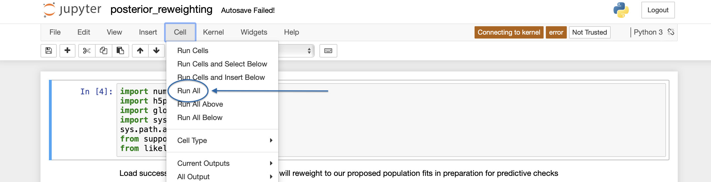

Figure Generation¶
Code to generate the figures and Latex macros included in our paper text is included in the folder BBH-spin-q-correlations/figures/.
In particular, these results are obtained by opening and running the following three Jupyter notebooks 1, which we will discuss in turn below:
posterior_reweighting.ipynbmake_figures.ipynbmake-macros.ipynb
Precomputing reweighted posteriors¶
Several figures in the paper involve showing reweighted posteriors, single-event measurements from which we have removed the default prior and applied a new, population-informed prior.
Other figures involve predictice checks, in which we compare observed data with expected data if a given population model is correct.
Computing reweighted posteriors and/or predicted detections is a semi-involved process, involving a loop over our hyperparameter samples and a random downsamping of single-event posteriors according to new population-informed weights.
To minimize the work that’s done in the actual plotting notebook (make_figures.ipynb), we use posterior_reweighting.ipynb to pre-compute and save much of this data in advance.
Open this notebook,
$ jupyter notebook posterior_reweighting.ipynb
and run all cells,
{kind=link}
to produce the following files:
reweighted_samples_noEvolution.npyReweighted single-event effective spin and mass ratio measurements, according to the
logp_powerLawPeak_noEvollikelihood model discussed in Likelihood definitions. Measurements are stored in a dictionary:>> import numpy as np >> dict = np.load('reweighted_samples_noEvolution.npy',allow_pickle=True)[()] >> dict.keys() dict_keys(['mock_q', 'mock_chi', 'resampled_q', 'resampled_chi'])
where
dict['resampled_q']anddict['resampled_chi']are each(n,m)arrays containing reweighted mass ratio and effective spin samples, respectively. Here,nis the number of BBH events in our catalog andmthe number of reweighted posterior samples for each event. Each of thesemsamples is conditioned on a different random draw from our posterior on the population-level parameters measured in our analysis. Meanwhile,dict['mock_q']anddict['mock_chi']are(n,m)arrays containing a sequence of mock observed catalogs, each withnevents, corresponding to ourmrandom draws from our population-level posteriors. Note that these mock catalogs include the impact of selection effects.reweighted_samples_yesEvolution.npyAs above, but using the
logp_powerLawPeaklikelihood model that includes the possibility of spin and mass ratio correlations.reweighted_samples_yesEvolution_no190412.npySame as above, but using results obtained when excluding GW190412.
reweighted_samples_yesEvolution_w190814.npySame as above, but using results obtained when including GW190814
injection_samples_reweightedToIsotropy.npyThis file contains reweighted parameter estimation samples from the mock injection study described in Mock Population Study. When performing parameter estimation on our simulated signals, we assume purely aligned component spins, with a prior that is uniform on spin magnitude. The fiducial parameter estimation samples released by the LIGO-Virgo Collaboration for GWTC-2, meanwhile, adopt a prior that is uniform in spin magnitude but isotropic in spin orientation 2. These choices correspond to different implicit priors on \(\chi_\mathrm{eff}\) and hence these two sets of results cannot be automatically compared in an apples-to-apples way.
To allow a direct comparison (e.g. between Figs. 1a and 9a in the paper text), this file contains parameter estimation samples that have been reweighted to the same implicit \(\chi_\mathrm{eff}\) prior that appears in the LIGO/Virgo results. Samples are accessed as a dictionary, with numbered keys that label each of our simulated signals:
>> import numpy as np >> reweighted_injection_samps = np.load('injection_samples_reweightedToIsotropy.npy',allow_pickle=True)[()] >> reweighted_injection_samps.keys() dict_keys([0, 1, 2, 3, 4, 5, 6, 7, 8, 9, 10, 11, 12, 13, 14, 15, 16, 17, 18, 19, 20, 21, 22, 23, 24, 25, 26, 27, 28, 29, 30, 31, 32, 33, 34, 35, 36, 37, 38, 39, 40, 41, 42, 43, 44, 45, 46, 47, 48, 49])
Each event key, in turn, leads to another dictionary containing mass ratio (
q) and effective spin (x) samples:>> reweighted_injection_samps[5].keys() dict_keys(['q', 'x']) >>> >>> reweighted_injection_samps[5]['q'] array([0.82542427, 0.5812419 , 0.77971792, ..., 0.8653652 , 0.55416062, 0.79111037]) >>> >>> reweighted_injection_samps[5]['x'] array([ 0.01672742, 0.06527243, -0.1468124 , ..., 0.02260662, -0.04104319, -0.04593011])
Making figures¶
With most of the necessary data precomputed, generating figures is as simple as opening the notebook make_figures.ipynb and running all cells.
Doing so will save out .pdf versions of each figure in this directory.
Making Latex macros¶
Similarly, Latex macrofiles defining numerical results quoted in our paper text are generated by opening and running make-macros.ipynb, which creates and writes to several files of the form macros_*txt.